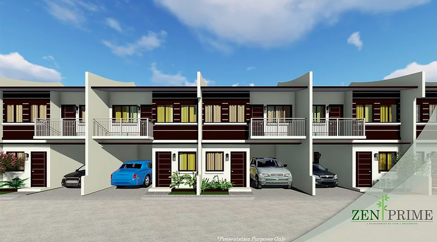
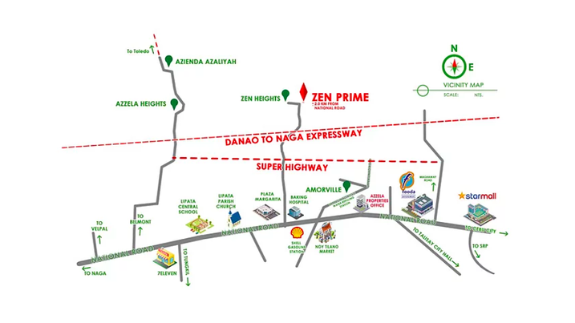
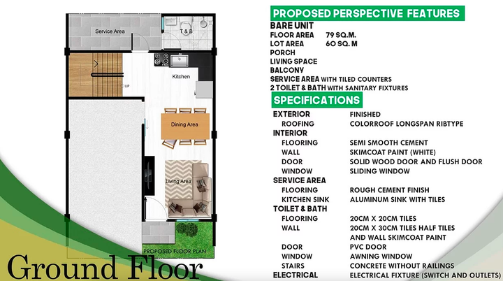
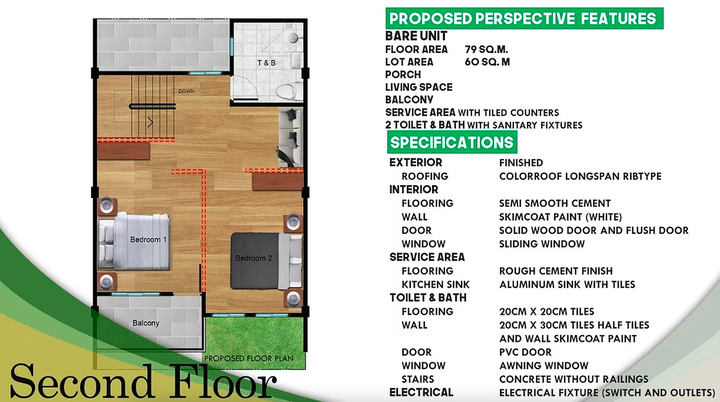

MOST AFFORDABLE RESIDENTIAL AND COMMERCIAL SUBDIVISION IN CEBU SOUTH
Zen Prime subdivision is a mixed residential and commercial subdivision with 30 residential units and 20 commercial units.
LOCATION: Brgy. Tubod, Minglanilla, Cebu
Features commercial, relaxation, school, and resort amenities.
Just across the residential units is the commercial center featuring 20 well-curated stores that will soon increase the convenience of living at Zen Prime Subdivision.
NICE LOCATION:
- The subdivision is just 5 minutes from the Nat’l Highway
- Just 2 minutes away from Danao – Naga Expressway
- Convenient and one of the most ideal places to live
Zen Prime subdivision features an existing road heading to the Nat’l Highway and the incoming Azzela Township
FEATURES & AMENITIES:
- Recreational Centre
- 10m wide gated main entrance & out with 24 HR Security
- 6m & 8m Wide Road
- Large Drainage System
- Own Source Water Supply
- Stable Electrical Supply
- Modern Perimeter Fence
- Clubhouse & Full Court
ADVANTAGE:
- Pocket subdivision with Commercial Building in front
- Just located below ZEN HEIGHTS Subdivision
- The nearest subdivision to Naga-Danao Expressway and Superhighway
HOUSE MODELS:
1. TOWNHOUSE WITH BALCONY
Floor Area: 79 sq m
Lot Area: 60 sq m
Total Contract Price: 3.01M
House Features:
* Internal – Bare Unit (No Partition, with Ceiling)
* External – Finish
* Kitchen – Tiles & Sink
* 2 Toilet & Bath with Bowl, Lavatory, Tiles & Shower
* Sliding Windows
* Solid Wood Door
Reservation Fee: 25K
Equity or Downpayment: P18,322.86 per month for 48 months
Can Be Paid Upon Turn Over:
Transfer Charges and Move-in Fees (7%) - P211,049
Electricity/Water Installation and Connection Fee - P 40,000
Loanable Amount Through Bank or Pag-ibig Financing: P 2,110,494.02
Sample Computation For Pag-ibig Financing:
* P13,141.87 per month for 30 years
* P14,062.15 per month for 25 years
* P15,558.04 per month for 20 years
* P18,219.08 per month for 15 years
* P23,810.83 per month for 10 years
HURRY VERY FEW UNITS LEFT!!!
RESERVE NOW!!
For Site Tour, Inquiries or Reservation, please contact
FB: Ara Maylin
Mobile Number: 09255037859
Watts App Number: +639255037859
email: myleneadeveloper@gmail.com
#CommercialSubdivisionForSaleInCebu
#ResidentialSubdivisionForSaleInCebu
#MostAffordableHouseAndLotForSaleInCebu
#BestPropertyInvestmentInCebu
#HouseAndLotForSaleInCebu
#RealEstateInvestmentInCebu
#CommercialPropertyForSaleInCebu
#MostAffordableHouseAndLotForSaleInCebuSouth
#NenRealty
#ElonMadeRealtyAndBrokerage
#RealEstateBrokerInCebu



